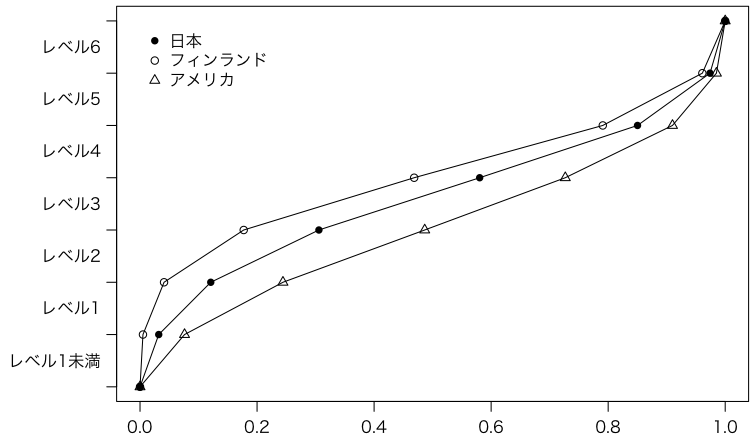

PISA（OECD生徒の学習到達度調査）：文部科学省 の「2006年調査」（PDF）のp.3にある「表1 科学的リテラシー全体における習熟度レベル別の生徒の割合」のデータです：
レベル1未満 レベル1 レベル2 レベル3 レベル4 レベル5 レベル6 日本 3.2 8.9 18.5 27.5 27.0 12.4 2.6 オーストラリア 3.0 9.8 20.2 27.7 24.6 11.8 2.8 カナダ 2.2 7.8 19.1 28.8 27.7 12.0 2.4 フィンランド 0.5 3.6 13.6 29.1 32.2 17.0 3.9 フランス 6.6 14.5 22.8 27.2 20.9 7.2 0.8 ドイツ 4.1 11.3 21.4 27.9 23.6 10.0 1.8 アイルランド 3.5 12.0 24.0 29.7 21.4 8.3 1.1 イタリア 7.3 18.0 27.6 27.4 15.1 4.2 0.4 韓国 2.5 8.7 21.2 31.8 25.5 9.2 1.1 ニュージーランド 4.0 9.7 19.7 25.1 23.9 13.6 4.0 イギリス 4.8 11.9 21.8 25.9 21.8 10.9 2.9 アメリカ 7.6 16.8 24.2 24.0 18.3 7.5 1.5 オランダ 2.3 10.7 21.1 26.9 25.8 11.5 1.7 OECD平均 5.2 14.1 24.0 27.4 20.3 7.7 1.3 香港 1.7 7.0 16.9 28.7 29.7 13.9 2.1 台湾 1.9 9.7 18.6 27.3 27.9 12.9 1.7
まずはこれをクリップボードにコピーして，次のようにしてRに読み込みます：
options(encoding="SJIS") # Mac
科学的リテラシー = read.table("clipboard", header=TRUE) # Windows
科学的リテラシー = read.table(pipe("pbpaste"), header=TRUE) # Mac
これを分位数プロット（quantile plot）にしてみます。
分位数プロットとは，ソートされたデータ x1 ≦ x2 ≦ …… ≦ xn が与えられたとき，横軸に分位数 fi = (i - 0.5) / n，縦軸にデータ xi をプロットしたものです。ここではデータがすでに割合で与えられており，上の定義をそのまま使えば階段状のグラフになりますが，以下ではちょっとアレンジしてみました：
# quartz(width=7,height=7) # Mac
# par(family="HiraKakuPro-W3") # Mac
par(mar=c(5,7,4,2)+0.1) # マージン: 元 c(5,4,4,2)+0.1
par(mgp=c(2,0.8,0))
par(las=1)
foo = function(x) {
append(cumsum(as.numeric(科学的リテラシー[x,])) / sum(as.numeric(科学的リテラシー[x,])),
0, after=0)
}
plot(foo("日本"), 0:7, type="o", pch=16, xlab="", ylab="", yaxt="n")
axis(2, 0:7, labels=FALSE)
axis(2, (0:6)+0.5, names(科学的リテラシー), lwd=0)
points(foo("フィンランド"), 0:7, type="o", pch=1)
points(foo("アメリカ"), 0:7, type="o", pch=2)
legend(0, 7, pch=c(16,1,2), legend=c("日本","フィンランド","アメリカ"), bty="n")

ECDF (Empirical Cumulative Distribution Function) とはx軸・y軸が逆になります。ecdf のヘルプもご覧ください。
以下の棒グラフ・帯グラフ（いずれも未完成）と比較してください：
barplot(as.matrix(科学的リテラシー[c("日本","フィンランド","アメリカ"),]),
beside=TRUE, horiz=TRUE)
barplot(t(as.matrix(科学的リテラシー[c("日本","フィンランド","アメリカ"),])),
horiz=TRUE)
Last modified: 2009-05-13 12:29:22